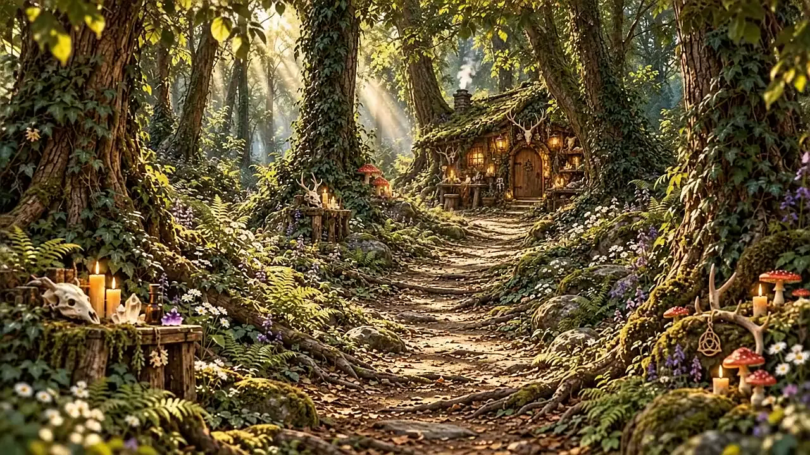
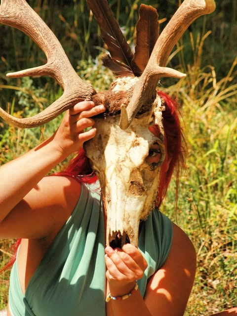
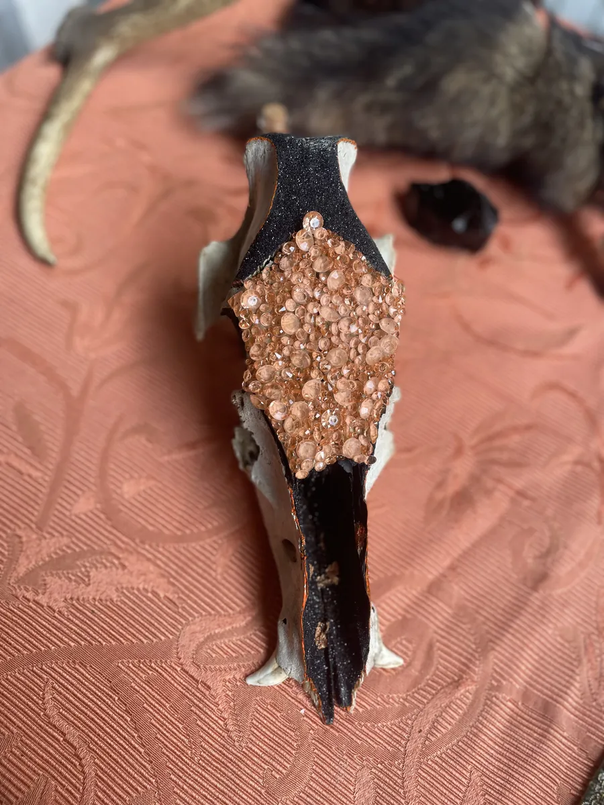
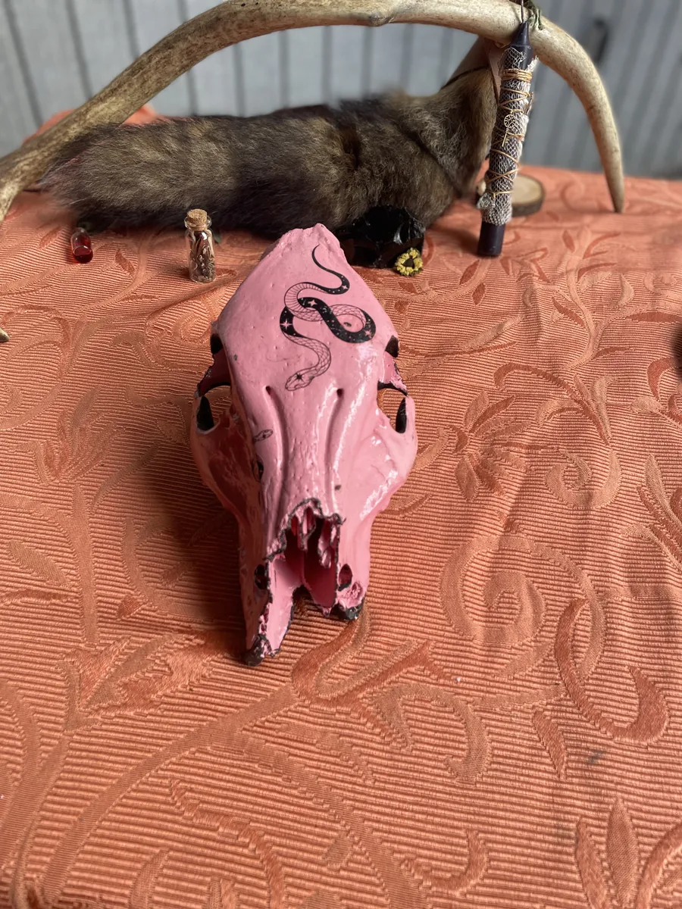
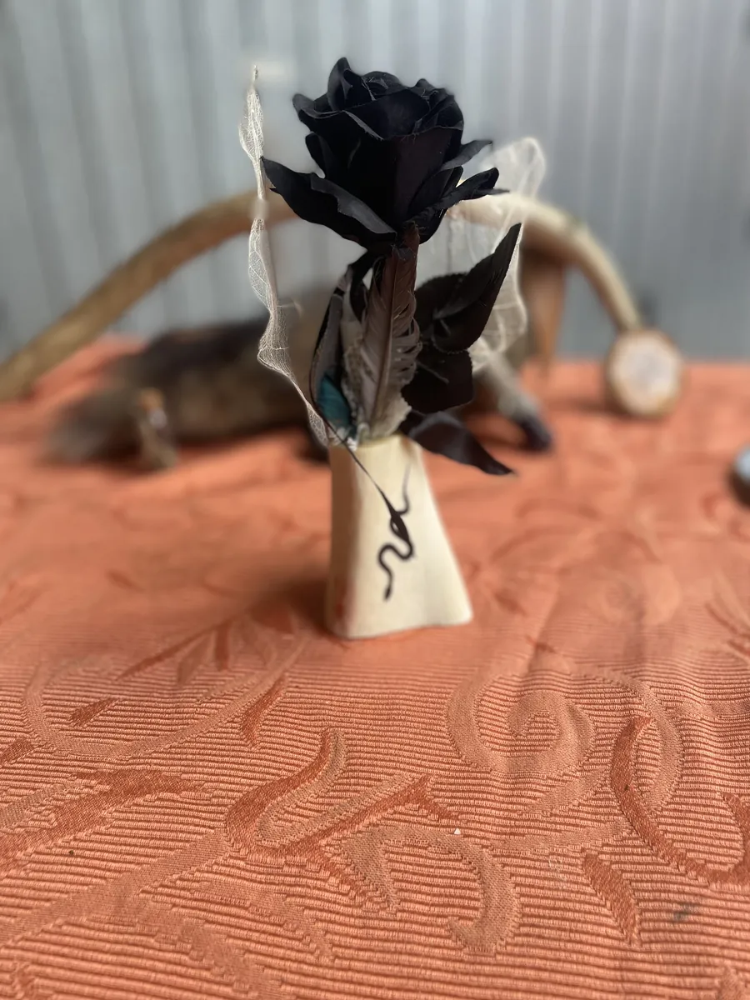
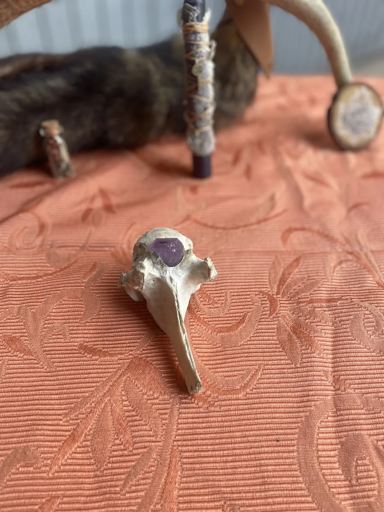

Magic Bones
Raccolgo quello che il bosco lascia andare
e gli ridò una vita.
Scorri e cammina con me
La mia storia
Non cerco. Trovo.
Cammino fuori Roma, dove il sentiero si chiude. Un cranio tra le felci, una vertebra sbiancata dalla pioggia: raccolgo quello che il bosco ha già lasciato andare.
Poi viene l'attesa
Pulisco, sbianco, aspetto. A volte per settimane. Un osso non si affretta: decide lui quando è pronto a farsi guardare.
E allora arriva il colore
Turchesi cuciti uno a uno, mandala tracciati senza matita, fiori secchi, piccole teche. Comincio la sera e alzo la testa che è mattina.
Mi chiamo Claudia
Ogni pezzo che esce da qui l'ho tenuto in mano per ore. Mi trovi ai mercatini di Roma — o spedisco in tutta Italia, e le cose su misura le facciamo insieme.

Sono Claudia
Non cerco.
Trovo.
Cammino fuori Roma, dove il sentiero si chiude. Un cranio tra le felci, una vertebra sbiancata dalla pioggia: raccolgo quello che il bosco ha già lasciato andare.
— Claudia Capitani
Il mio banco
I pezzi a cui
sono più affezionata
Non sono i più costosi. Sono quelli che mi hanno tenuta sveglia fino a tardi, o che ho quasi tenuto per me.
-

IIl pezzo del mese
Cinghiale luxury
«Piccolo cinghiale, poverino: era giovane.»
Teschio di cinghiale nero e rame metallizzato, con Swarovski al centro e nero glitterato.
€ 95pezzo unico
Entra nel pezzo → -

IIFemminile, ma stregato
Cinghiale fashion
Mezzo teschio di cinghiale rosa shocking, con serpenti neri dipinti.
€ 65pezzo unico
Entra nel pezzo → -

IIIRomantico gotico
Rosa stregata
Pezzo di osso con dentro una rosa nera, pelle di serpente, piume vere e finte e foglie disidratate.
€ 30pezzo unico
Entra nel pezzo → -

IVBello da mettere sull'altare
Vertebra con punta di ametista
Vertebra di equino al naturale, con una punta di ametista incastonata. La preparo su richiesta, dai 10 ai 15 cm.
€ 25a pezzo
Entra nel pezzo →

Dal banco di lavoro
Come nasce un pezzo
Ore di lavoro ridotte a pochi secondi. Trascina pure, con calma.
Scrivimi
Rispondo io,
Claudia
Per un pezzo che hai visto, per qualcosa che hai in testa e non esiste ancora, o solo per chiedermi dove l'ho trovato. Ti rispondo io, sempre.
- WhatsApp+39 328 363 2440
- Instagram@_magic_bones ↗
- Vintedmagicbones777
- Emaillalla02.capitani@gmail.com
- DoveRoma — mercatini e spedizioni in tutta Italia